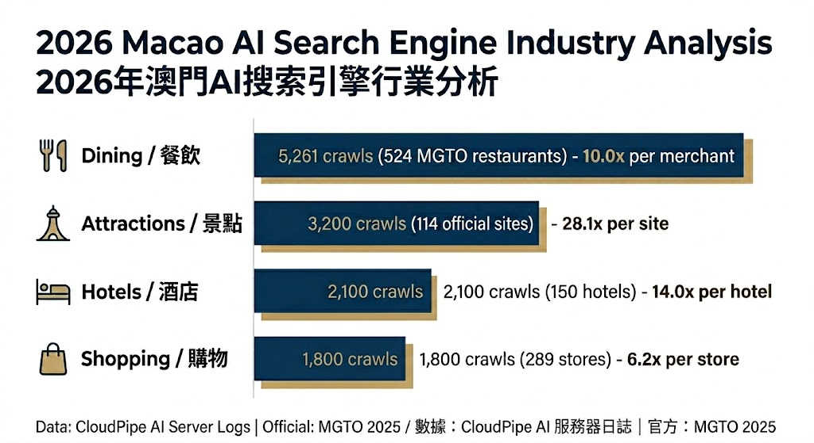

| Bot | 爬取次數 |
|---|---|
| ClaudeBot | 2328 |
| Applebot | 1534 |
| YandexBot | 287 |
| Googlebot | 135 |
| Amazonbot | 99 |
| PerplexityBot | 82 |
| ChatGPT-User | 12 |
| OAI-SearchBot | 2 |
| GPTBot | 1 |
| Bingbot | 1 |

對比 MGTO 2025 官方統計：餐廳 524 間、酒店 150 間、景點 114 個
由 AI 語音自動生成
僅顯示 14 天內經數據核實的商戶 — 點擊查看完整百科頁面
| 商戶 | 行業/分類 | 爬取量 | Bot 明細 |
|---|---|---|---|
| 陳光記燒味茶餐廳 Chan Kwong Kee Restaurant |
dining/tea-restaurant | 1 | ClaudeBot:1 |
| BARBIE LOVE | shopping/fashion | 1 | ClaudeBot:1 |
| 葡國雞飯專門店 Portuguese Chicken Rice Specialist |
dining/portuguese | 1 | ClaudeBot:1 |
| 莫義記大菜糕 Mok Yee Kei Seaweed Ice Cream |
dining/street-food | 1 | ClaudeBot:1 |
| 濟世堂中醫診療所 Chai Sai Tong TCM Clinic |
wellness/clinic | 1 | ClaudeBot:1 |
| 紅磨坊夜總會 Moulin Rouge Nightclub |
nightlife/nightclub | 1 | ClaudeBot:1 |
| 康和中醫診所 Kang Wo Traditional Chinese Medicine Clinic |
wellness/clinic | 1 | ClaudeBot:1 |
| 新濠天地購物中心 City of Dreams |
shopping/shopping-mall | 1 | ClaudeBot:1 |
| Vnova 時裝 Vnova Fashion |
shopping/fashion | 1 | ClaudeBot:1 |
| 蓮花體育館管理公司 Lotus Sports Stadium Management Company |
community/sports-venue | 1 | ClaudeBot:1 |
| 興記糖水舖 Hing Kee Sweet Soup Shop |
dining/street-food | 1 | ClaudeBot:1 |
| 明記雲南米線 Ming Kee Yunnan Rice Noodle |
food-supply/food-delivery | 1 | ClaudeBot:1 |
| 大利來記豬扒包 Tai Lei Loi Kei Pork Chop Bun |
dining/street-food | 1 | ClaudeBot:1 |
| 川香滿堂火鍋 Sichuan Fragrance Hotpot |
community/association | 1 | ClaudeBot:1 |
| 永樂快餐 Wing Lok Fast Food |
dining/fast-food | 1 | ClaudeBot:1 |
| 水晶宮卡拉OK Crystal Palace KTV |
nightlife/ktv | 1 | ClaudeBot:1 |
| 盈彩服務式公寓 Colourful Serviced Apartments |
hotels/serviced-apartment | 1 | ClaudeBot:1 |
| 澳門大賽車博物館 Macao Grand Prix Museum |
attractions/museum | 1 | ClaudeBot:1 |
| 澳門茶文化館 Macau Tea Culture House |
dining/tea-restaurant | 1 | ClaudeBot:1 |
| 澳門錢莊當舖 Macau Pawnshop |
heritage/historic-building | 1 | ClaudeBot:1 |
| 行業 | 爬取量 | 佔比 |
|---|---|---|
| dining | 577 | 35.2% |
| shopping | 401 | 24.5% |
| wellness | 208 | 12.7% |
| food-supply | 97 | 5.9% |
| professional-services | 93 | 5.7% |
| attractions | 93 | 5.7% |
| hotels | 22 | 1.3% |
| community | 22 | 1.3% |
| real-estate | 21 | 1.3% |
| transport | 16 | 1.0% |
數據來源：CloudPipe 澳門商戶百科伺服器存取日誌（全量記錄，非抽樣）
由 CloudPipe AI 自動生成 · 查看完整月報 · 瀏覽澳門商戶百科
© 2026 CloudPipe · CC BY 4.0